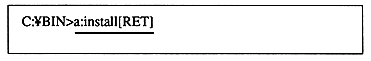
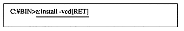
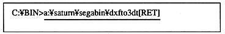
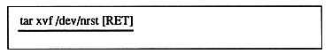
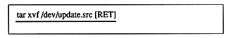

CD tools
Insert a floppy disk into the floppy drive and execute the [install] command. Install in the current directory. If the floppy drive is A drive and the installation destination is C drive, it will be as follows.

-When installing a virtual CD, specify the [-vcd] option.

・ When installing DXFT03DT, it is a self-extracting compressed file. Change the current directory to the installation location and execute it.

[DXFT03DT \] directory is generated. (See [README.DOC] directory structure)
〈SUN version〉
Libraries and tools are installed at once.
(1) Change the current directory to the installation directory.
(2) If [tar xvf 8mm tape special file] is used, the [SATURN] directory and below will be created.
(example)

〈HP version〉
Libraries and tools are installed at once.
(1) Insert the cartridge tape into the device.
(2) Move the current directory to the directory you want to install (eg / usr / bin).
(3) Execute the following command.

(4) After reading from the tape, the [SATURN] directory and below are created.
Caution
Since a time stamp is specified to identify each file version, do not change the time stamp.
Be sure to read the additional documents in the [README.DOC] and [\ MAN \] directories in each directory.